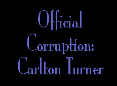
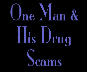

|  |
| |

In all the research this author has done about the misapplication of public funds and trusts, nothing, it seems, compares with the either totally ignorant or willful manslaughter of fellow Americans by the bureaucrats and politicians of the following story:

The U.S. government policy, starting in the Nixon and Ford administrations and continuing under Carlton Turner* (Drug Czar under Reagan 1981-1986), allowed federal medical marijuana, supplied to the individual state marijuana medical programs, to consist only of the leaf of the marijuana plant, even though it’s usually only one-third as strong as the bud and doesn’t contain the same whole spectrum of the “crude drug,” i.e. the THC and CBNs.
* Prior to becoming Special White Hose Advisor (read: National Drug Czar) Carlton Turner, from 1971 to 1980, was the head of all U.S. government marijuana grown for drugs by reason of his position at the University of Mississippi. The U. of Mississippi Marijuana Research Program is directed by state charter to discover—initiate or sort out the constituents of THC—a “simple” crude cannabis drug that works as a medicine—then synthesize the substances with beneficial medicinal properties to attain their full potential for pharmaceutical companies.
For example, the leaf’s relief of ocular pressure for glaucoma patients is much shorter lasting and therefore unsatisfactory, compared to the bud. Also, the leaf sometimes gives smokers a headache. The federal government until 1986 used only the leaf. Turner said to the pharmaceutical companies and in interview, that leaf is all Americans would ever get—although the bud works better. Still today in 1999, the seven legal marijuana users in the U.S. only get leaf, branch, and bud chopped up and rolled together. Although buds work better for chemotherapy, glaucoma, etc., the branches can be as toxic as smoking wood.
Turner said, in 1986, that natural marijuana will “never” be given as a medicine and, as of April 1998, it still hasn’t. (Except in California, where citizens successfully voted, in November 1996, to overrule the federal government on medical marijuana!)
(Interviews by Ed Rosenthal for High Times Magazine; Dean Latimer, et al; National Organization for the Reform of Marijuana Laws, or NORML.)
Although buds work better for chemotherapy, glaucoma, etc., Turner said they will “never” be given.
It also became evident the famous marijuana ‘munchies’ (appetite stimulation) were not working for the cancer chemotherapy patients using federal leaf.
And even though no studies have been allowed to compare leaf with bud, we know of doctors who unofficially recommended bud and watch their wasting cancer patients put on weight (NORML).
In August and September, 1983, Turner went on national television to justify the illegal marijuana spraying (by plane) of paraquat in Georgia, Kentucky, and Tennessee by the DEA. He said it would teach a lesson to any kid who died from paraquat-poisoned pot.
Turner was forced to resign after announcing his conclusions in public that marijuana caused homosexuality, the breakdown of the immune system, and, therefore, AIDS.
Looking into the therapeutic potential of cannabis is the most controlled and discouraged research, but any tests pursuing negative or harmful effects of cannabis are promoted. Since these tests often backfire or are inconclusive, even this research is rare.
Turner quoted “The Rise and Fall of the Roman Empire” to show how jazz (rock) singers are eroding the America “he” loves with this hallucinogenic drug—marijuana! Which he meant to stamp out.
During the 1978 Mexican marijuana paraquat scare, and while still a private citizen working for the state of Mississippi marijuana farm, this same Carlton Turner called High Times magazine to advertise a paraquat tester.
Unknown to Turner, High Times was not accepting ads for any paraquat testers because all evidence showed the testers didn’t work.
Dean Latimer—then a High Times associate editor, strung Turner along in virtually daily phone conversations for a month, listening to Turner talk about how much money Turner was going to make from sales of the device.
High Times wanted to see a sample. When Turner delivered his prototype version of the paraquat test kit to High Times, it was a total “Rube Goldberg” type rip-off, “just like the dozen or so phony kits other companies tried to buy ad space for at this time,” wrote Latimer in an article published in 1984.
Turner apparently never thought High Times was ethical enough to check the contraption out. He assumed they would just take the ad money and run—print the ad and make Turner rich.
He didn’t care if some kid died or was bilked out of money believing in his bogus paraquat test kit.
After this attempted mail fraud, this man became President Reagan’s national drug czar in 1981, recommended by George Bush and Nancy Reagan.
Turner even said that he doesn’t even care if hundreds of kids die from smoking pot the federal government has deliberately sprayed with paraquat.
Then at the April 25, 1985, PRIDE conference in Atlanta, Georgia, with Nancy Reagan and 16 foreign First Ladies in attendance (including Imelda Marcos), Turner called for the death penalty for drug dealers.
Turner was, after all, Reagan’s, Bush’s, and the pharmaceutical companies’ own hired gun, who saw his entire mission as not against heroin, PCP, or cocaine, but to wipe out pot and jazz/rock music…
Carlton Turner was forced to resign after Newsweek magazine excoriated him October 27, 1986, in a large editorial sidebar. His resignation was a foregone conclusion after being lampooned in the Washington Post and elsewhere as no other public figure in recent memory for his conclusions (in public addresses) that marijuana smoking caused homosexuality, the breakdown of the immune system, and, therefore, AIDS.
He resigned December 16, 1986. What should have been front page headline news was buried in the back pages during the Iran-contra scandal that exploded that week.
After his resignation, Turner joined with Robert DuPont and former head of NIDA, Peter Bensinger, to corner the market on urine testing. They contracted as advisors to 250 of the largest corporations to develop drug diversion, detection, and urine testing programs.
After his resignation, Turner joined with Robert L. DuPont and former head of NIDA, Peter Bensinger to corner the market on urine testing.
Soon after Turner left office, Nancy Reagan recommended that no corporation be permitted to do business with the Federal government without having a urine purity policy in place to show their loyalty.
Just as G. Gordon Liddy went into high-tech corporate security after his disgrace, Carlton Turner became a rich man in what has now become a huge growth industry: urine-testing.
This kind of business denies the basic rights of privacy, self-incrimination (Fifth Amendment) rights, unreasonable search and seizure, and the presumption of innocence (until proven guilty).
Submission to the humiliation of having your most private body parts and functions observed by a hired voyeur is now the test of eligibility for private employment, or to contract for a living wage.
Turner’s new money-making scheme demands that all other Americans relinquish their fundamental right to privacy and self-respect.
the authorized on-line version of Jack Herer’s “The Emperor Wears No Clothes”
| previous page | Chapter 15 | next page |
|
 |
 |
 |
 |